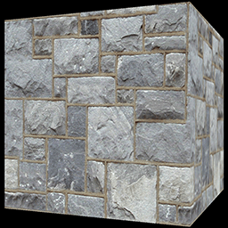
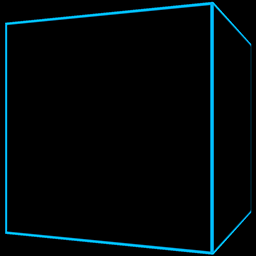
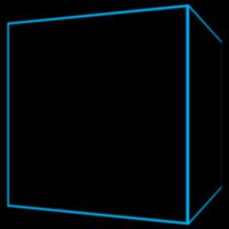
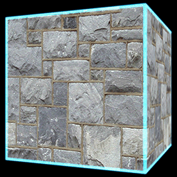
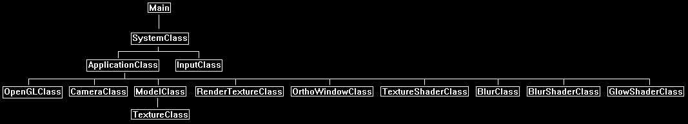
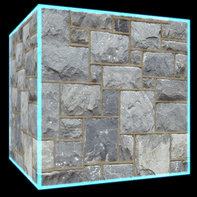

In this tutorial we will go over how to add a glow effect to your 3D and 2D rendered scenes.
The code will be written using OpenGL 4.0 and GLSL.
This tutorial will build on the code from the blur tutorial 36.
The first part of the glow technique is to use what is known as a glow map.
This is a texture that defines where on a polygon face to apply glow, and also what color that glow should be.
For this tutorial we will be adding blue glow to the edges of our rotating cube, and so the glow map will look like the following:
Once we have our glow map, we can now perform the glow effect.
To add glow to our scene we will actually do the effect using 2D post processing.
The step-by-step process will go as follows:
1. Render our regular 3D scene to a render to texture:

2. Render the 3D scene using glow maps instead of regular texture to a second render to texture called the glow render texture:

3. Blur the glow render to texture:

4. Combine the two render to textures as a 2D step using a glow shader and a glow strength variable to control how much of the glow gets added back to the scene:

Now since we are doing this as a 2D post processing effect it will be very efficient for large scenes with lots of glow.
However, we will need to remember that different screen resolutions will affect the look of the glow.
And if we are looking for a consistent glow look, we will need to take the actual screen size (not render to texture size) as parameters into a more advanced glow and blur shader.
But for simplicity in this tutorial, we will cover just the basic glow shader to start with.
And just as a final note we must remember that glow is an emissive light.
All emissive lighting always gets added at the end of a render pass and should not have other lighting affect it.
So, if you have multiple render textures and do a large 2D post processing pass at the end of your frame, then remember to just do an addition of the emissive (glow) light as the final line in your shader.
Framework
The framework will look similar to the blur tutorial with the addition of the new GlowShaderClass.

We will start the code section by looking at the glow shader.
Glow.vs
The vertex shader is similar to other vertex shaders by just passing the transformed position and texture coordinates to the pixel shader.
////////////////////////////////////////////////////////////////////////////////
// Filename: glow.vs
////////////////////////////////////////////////////////////////////////////////
#version 400
/////////////////////
// INPUT VARIABLES //
/////////////////////
in vec3 inputPosition;
in vec2 inputTexCoord;
in vec3 inputNormal;
//////////////////////
// OUTPUT VARIABLES //
//////////////////////
out vec2 texCoord;
///////////////////////
// UNIFORM VARIABLES //
///////////////////////
uniform mat4 worldMatrix;
uniform mat4 viewMatrix;
uniform mat4 projectionMatrix;
////////////////////////////////////////////////////////////////////////////////
// Vertex Shader
////////////////////////////////////////////////////////////////////////////////
void main(void)
{
// Calculate the position of the vertex against the world, view, and projection matrices.
gl_Position = vec4(inputPosition, 1.0f) * worldMatrix;
gl_Position = gl_Position * viewMatrix;
gl_Position = gl_Position * projectionMatrix;
// Store the texture coordinates for the pixel shader.
texCoord = inputTexCoord;
}
Glow.ps
////////////////////////////////////////////////////////////////////////////////
// Filename: glow.ps
////////////////////////////////////////////////////////////////////////////////
#version 400
/////////////////////
// INPUT VARIABLES //
/////////////////////
in vec2 texCoord;
//////////////////////
// OUTPUT VARIABLES //
//////////////////////
out vec4 outputColor;
///////////////////////
// UNIFORM VARIABLES //
///////////////////////
We will require two textures for the glow pixel shader.
The first will be the regular scene render texture.
The second will be the glow scene render texture.
uniform sampler2D colorTexture;
uniform sampler2D glowTexture;
We will also require a glow strength variable to know how much glow we should apply to the final output color pixel.
uniform float glowStrength;
////////////////////////////////////////////////////////////////////////////////
// Pixel Shader
////////////////////////////////////////////////////////////////////////////////
void main(void)
{
vec4 textureColor;
vec4 glowMap;
First sample both the color texture and the glow map texture.
// Sample the color texture.
textureColor = texture(colorTexture, texCoord);
// Sample the glow texture.
glowMap = texture(glowTexture, texCoord);
Now add the two textures together to get the final result.
The glow map is also multiplied by the glow strength to increase or decrease the amount of glow contributing to the final color.
// Add the texture color to the glow color multiplied by the glow strength.
outputColor = clamp(textureColor + (glowMap * glowStrength), 0.0f, 1.0f);
}
Glowshaderclass.h
The GlowShaderClass follows our typical shader class layout.
////////////////////////////////////////////////////////////////////////////////
// Filename: glowshaderclass.h
////////////////////////////////////////////////////////////////////////////////
#ifndef _GLOWSHADERCLASS_H_
#define _GLOWSHADERCLASS_H_
//////////////
// INCLUDES //
//////////////
#include <iostream>
using namespace std;
///////////////////////
// MY CLASS INCLUDES //
///////////////////////
#include "openglclass.h"
////////////////////////////////////////////////////////////////////////////////
// Class name: GlowShaderClass
////////////////////////////////////////////////////////////////////////////////
class GlowShaderClass
{
public:
GlowShaderClass();
GlowShaderClass(const GlowShaderClass&);
~GlowShaderClass();
bool Initialize(OpenGLClass*);
void Shutdown();
bool SetShaderParameters(float*, float*, float*, float);
private:
bool InitializeShader(char*, char*);
void ShutdownShader();
char* LoadShaderSourceFile(char*);
void OutputShaderErrorMessage(unsigned int, char*);
void OutputLinkerErrorMessage(unsigned int);
private:
OpenGLClass* m_OpenGLPtr;
unsigned int m_vertexShader;
unsigned int m_fragmentShader;
unsigned int m_shaderProgram;
};
#endif
Glowshaderclass.cpp
////////////////////////////////////////////////////////////////////////////////
// Filename: glowshaderclass.cpp
////////////////////////////////////////////////////////////////////////////////
#include "glowshaderclass.h"
GlowShaderClass::GlowShaderClass()
{
m_OpenGLPtr = 0;
}
GlowShaderClass::GlowShaderClass(const GlowShaderClass& other)
{
}
GlowShaderClass::~GlowShaderClass()
{
}
bool GlowShaderClass::Initialize(OpenGLClass* OpenGL)
{
char vsFilename[128];
char psFilename[128];
bool result;
// Store the pointer to the OpenGL object.
m_OpenGLPtr = OpenGL;
Set the glow shader file names.
// Set the location and names of the shader files.
strcpy(vsFilename, "../Engine/glow.vs");
strcpy(psFilename, "../Engine/glow.ps");
// Initialize the vertex and pixel shaders.
result = InitializeShader(vsFilename, psFilename);
if(!result)
{
return false;
}
return true;
}
void GlowShaderClass::Shutdown()
{
// Shutdown the shader.
ShutdownShader();
// Release the pointer to the OpenGL object.
m_OpenGLPtr = 0;
return;
}
bool GlowShaderClass::InitializeShader(char* vsFilename, char* fsFilename)
{
const char* vertexShaderBuffer;
const char* fragmentShaderBuffer;
int status;
// Load the vertex shader source file into a text buffer.
vertexShaderBuffer = LoadShaderSourceFile(vsFilename);
if(!vertexShaderBuffer)
{
return false;
}
// Load the fragment shader source file into a text buffer.
fragmentShaderBuffer = LoadShaderSourceFile(fsFilename);
if(!fragmentShaderBuffer)
{
return false;
}
// Create a vertex and fragment shader object.
m_vertexShader = m_OpenGLPtr->glCreateShader(GL_VERTEX_SHADER);
m_fragmentShader = m_OpenGLPtr->glCreateShader(GL_FRAGMENT_SHADER);
// Copy the shader source code strings into the vertex and fragment shader objects.
m_OpenGLPtr->glShaderSource(m_vertexShader, 1, &vertexShaderBuffer, NULL);
m_OpenGLPtr->glShaderSource(m_fragmentShader, 1, &fragmentShaderBuffer, NULL);
// Release the vertex and fragment shader buffers.
delete [] vertexShaderBuffer;
vertexShaderBuffer = 0;
delete [] fragmentShaderBuffer;
fragmentShaderBuffer = 0;
// Compile the shaders.
m_OpenGLPtr->glCompileShader(m_vertexShader);
m_OpenGLPtr->glCompileShader(m_fragmentShader);
// Check to see if the vertex shader compiled successfully.
m_OpenGLPtr->glGetShaderiv(m_vertexShader, GL_COMPILE_STATUS, &status);
if(status != 1)
{
// If it did not compile then write the syntax error message out to a text file for review.
OutputShaderErrorMessage(m_vertexShader, vsFilename);
return false;
}
// Check to see if the fragment shader compiled successfully.
m_OpenGLPtr->glGetShaderiv(m_fragmentShader, GL_COMPILE_STATUS, &status);
if(status != 1)
{
// If it did not compile then write the syntax error message out to a text file for review.
OutputShaderErrorMessage(m_fragmentShader, fsFilename);
return false;
}
// Create a shader program object.
m_shaderProgram = m_OpenGLPtr->glCreateProgram();
// Attach the vertex and fragment shader to the program object.
m_OpenGLPtr->glAttachShader(m_shaderProgram, m_vertexShader);
m_OpenGLPtr->glAttachShader(m_shaderProgram, m_fragmentShader);
// Bind the shader input variables.
m_OpenGLPtr->glBindAttribLocation(m_shaderProgram, 0, "inputPosition");
m_OpenGLPtr->glBindAttribLocation(m_shaderProgram, 1, "inputTexCoord");
// Link the shader program.
m_OpenGLPtr->glLinkProgram(m_shaderProgram);
// Check the status of the link.
m_OpenGLPtr->glGetProgramiv(m_shaderProgram, GL_LINK_STATUS, &status);
if(status != 1)
{
// If it did not link then write the syntax error message out to a text file for review.
OutputLinkerErrorMessage(m_shaderProgram);
return false;
}
return true;
}
void GlowShaderClass::ShutdownShader()
{
// Detach the vertex and fragment shaders from the program.
m_OpenGLPtr->glDetachShader(m_shaderProgram, m_vertexShader);
m_OpenGLPtr->glDetachShader(m_shaderProgram, m_fragmentShader);
// Delete the vertex and fragment shaders.
m_OpenGLPtr->glDeleteShader(m_vertexShader);
m_OpenGLPtr->glDeleteShader(m_fragmentShader);
// Delete the shader program.
m_OpenGLPtr->glDeleteProgram(m_shaderProgram);
return;
}
char* GlowShaderClass::LoadShaderSourceFile(char* filename)
{
FILE* filePtr;
char* buffer;
long fileSize, count;
int error;
// Open the shader file for reading in text modee.
filePtr = fopen(filename, "r");
if(filePtr == NULL)
{
return 0;
}
// Go to the end of the file and get the size of the file.
fseek(filePtr, 0, SEEK_END);
fileSize = ftell(filePtr);
// Initialize the buffer to read the shader source file into, adding 1 for an extra null terminator.
buffer = new char[fileSize + 1];
// Return the file pointer back to the beginning of the file.
fseek(filePtr, 0, SEEK_SET);
// Read the shader text file into the buffer.
count = fread(buffer, 1, fileSize, filePtr);
if(count != fileSize)
{
return 0;
}
// Close the file.
error = fclose(filePtr);
if(error != 0)
{
return 0;
}
// Null terminate the buffer.
buffer[fileSize] = '\0';
return buffer;
}
void GlowShaderClass::OutputShaderErrorMessage(unsigned int shaderId, char* shaderFilename)
{
long count;
int logSize, error;
char* infoLog;
FILE* filePtr;
// Get the size of the string containing the information log for the failed shader compilation message.
m_OpenGLPtr->glGetShaderiv(shaderId, GL_INFO_LOG_LENGTH, &logSize);
// Increment the size by one to handle also the null terminator.
logSize++;
// Create a char buffer to hold the info log.
infoLog = new char[logSize];
// Now retrieve the info log.
m_OpenGLPtr->glGetShaderInfoLog(shaderId, logSize, NULL, infoLog);
// Open a text file to write the error message to.
filePtr = fopen("shader-error.txt", "w");
if(filePtr == NULL)
{
cout << "Error opening shader error message output file." << endl;
return;
}
// Write out the error message.
count = fwrite(infoLog, sizeof(char), logSize, filePtr);
if(count != logSize)
{
cout << "Error writing shader error message output file." << endl;
return;
}
// Close the file.
error = fclose(filePtr);
if(error != 0)
{
cout << "Error closing shader error message output file." << endl;
return;
}
// Notify the user to check the text file for compile errors.
cout << "Error compiling shader. Check shader-error.txt for error message. Shader filename: " << shaderFilename << endl;
return;
}
void GlowShaderClass::OutputLinkerErrorMessage(unsigned int programId)
{
long count;
FILE* filePtr;
int logSize, error;
char* infoLog;
// Get the size of the string containing the information log for the failed shader compilation message.
m_OpenGLPtr->glGetProgramiv(programId, GL_INFO_LOG_LENGTH, &logSize);
// Increment the size by one to handle also the null terminator.
logSize++;
// Create a char buffer to hold the info log.
infoLog = new char[logSize];
// Now retrieve the info log.
m_OpenGLPtr->glGetProgramInfoLog(programId, logSize, NULL, infoLog);
// Open a file to write the error message to.
filePtr = fopen("linker-error.txt", "w");
if(filePtr == NULL)
{
cout << "Error opening linker error message output file." << endl;
return;
}
// Write out the error message.
count = fwrite(infoLog, sizeof(char), logSize, filePtr);
if(count != logSize)
{
cout << "Error writing linker error message output file." << endl;
return;
}
// Close the file.
error = fclose(filePtr);
if(error != 0)
{
cout << "Error closing linker error message output file." << endl;
return;
}
// Pop a message up on the screen to notify the user to check the text file for linker errors.
cout << "Error linking shader program. Check linker-error.txt for message." << endl;
return;
}
bool GlowShaderClass::SetShaderParameters(float* worldMatrix, float* viewMatrix, float* projectionMatrix, float glowStrength)
{
float tpWorldMatrix[16], tpViewMatrix[16], tpProjectionMatrix[16];
int location;
// Transpose the matrices to prepare them for the shader.
m_OpenGLPtr->MatrixTranspose(tpWorldMatrix, worldMatrix);
m_OpenGLPtr->MatrixTranspose(tpViewMatrix, viewMatrix);
m_OpenGLPtr->MatrixTranspose(tpProjectionMatrix, projectionMatrix);
// Install the shader program as part of the current rendering state.
m_OpenGLPtr->glUseProgram(m_shaderProgram);
Start by setting our matrices as usual.
// Set the world matrix in the vertex shader.
location = m_OpenGLPtr->glGetUniformLocation(m_shaderProgram, "worldMatrix");
if(location == -1)
{
cout << "World matrix not set." << endl;
}
m_OpenGLPtr->glUniformMatrix4fv(location, 1, false, tpWorldMatrix);
// Set the view matrix in the vertex shader.
location = m_OpenGLPtr->glGetUniformLocation(m_shaderProgram, "viewMatrix");
if(location == -1)
{
cout << "View matrix not set." << endl;
}
m_OpenGLPtr->glUniformMatrix4fv(location, 1, false, tpViewMatrix);
// Set the projection matrix in the vertex shader.
location = m_OpenGLPtr->glGetUniformLocation(m_shaderProgram, "projectionMatrix");
if(location == -1)
{
cout << "Projection matrix not set." << endl;
}
m_OpenGLPtr->glUniformMatrix4fv(location, 1, false, tpProjectionMatrix);
Now set the first texture to be the color texture, which is the first render texture of the regular scene.
// Set the color texture in the pixel shader to use the data from the first texture unit.
location = m_OpenGLPtr->glGetUniformLocation(m_shaderProgram, "colorTexture");
if(location == -1)
{
cout << "Color texture not set." << endl;
}
m_OpenGLPtr->glUniform1i(location, 0);
Set the second texture in the pixel shader to be our blurred glow render texture.
// Set the glow texture in the pixel shader to use the data from the second texture unit.
location = m_OpenGLPtr->glGetUniformLocation(m_shaderProgram, "glowTexture");
if(location == -1)
{
cout << "Glow texture not set." << endl;
}
m_OpenGLPtr->glUniform1i(location, 1);
And finally set the glow strength variable in the pixel shader so we can dynamically control the amount of glow that contributes to the scene.
// Set the glow strength in the pixel shader.
location = m_OpenGLPtr->glGetUniformLocation(m_shaderProgram, "glowStrength");
if(location == -1)
{
cout << "Glow strength not set." << endl;
}
m_OpenGLPtr->glUniform1f(location, glowStrength);
return true;
}
Applicationclass.h
////////////////////////////////////////////////////////////////////////////////
// Filename: applicationclass.h
////////////////////////////////////////////////////////////////////////////////
#ifndef _APPLICATIONCLASS_H_
#define _APPLICATIONCLASS_H_
/////////////
// GLOBALS //
/////////////
const bool FULL_SCREEN = false;
const bool VSYNC_ENABLED = true;
const float SCREEN_NEAR = 0.3f;
const float SCREEN_DEPTH = 1000.0f;
///////////////////////
// MY CLASS INCLUDES //
///////////////////////
#include "inputclass.h"
#include "openglclass.h"
#include "cameraclass.h"
#include "modelclass.h"
#include "rendertextureclass.h"
#include "blurclass.h"
#include "glowshaderclass.h"
////////////////////////////////////////////////////////////////////////////////
// Class Name: ApplicationClass
////////////////////////////////////////////////////////////////////////////////
class ApplicationClass
{
public:
ApplicationClass();
ApplicationClass(const ApplicationClass&);
~ApplicationClass();
bool Initialize(Display*, Window, int, int);
void Shutdown();
bool Frame(InputClass*);
private:
bool RenderSceneToTexture(float);
bool RenderGlowToTexture(float);
bool Render();
private:
OpenGLClass* m_OpenGL;
CameraClass* m_Camera;
ModelClass* m_Model;
We will require two render textures. One for the regular scene, and one for the glow scene.
RenderTextureClass *m_RenderTexture, *m_GlowTexture;
We will need a 2D full screen window for the 2D post processing glow effect.
OrthoWindowClass* m_FullScreenWindow;
TextureShaderClass* m_TextureShader;
The blur and blur shader objects will also be required for blurring the rendered glow scene.
BlurShaderClass* m_BlurShader;
BlurClass* m_Blur;
And finally, the glow shader is added to combine the regular scene and the glow scene together.
GlowShaderClass* m_GlowShader;
};
#endif
Applicationclass.cpp
////////////////////////////////////////////////////////////////////////////////
// Filename: applicationclass.cpp
////////////////////////////////////////////////////////////////////////////////
#include "applicationclass.h"
ApplicationClass::ApplicationClass()
{
m_OpenGL = 0;
m_Camera = 0;
m_Model = 0;
m_RenderTexture = 0;
m_GlowTexture = 0;
m_FullScreenWindow = 0;
m_TextureShader = 0;
m_BlurShader = 0;
m_Blur = 0;
m_GlowShader = 0;
}
ApplicationClass::ApplicationClass(const ApplicationClass& other)
{
}
ApplicationClass::~ApplicationClass()
{
}
bool ApplicationClass::Initialize(Display* display, Window win, int screenWidth, int screenHeight)
{
char modelFilename[128], textureFilename[128], glowMapFilename[128];
int downSampleWidth, downSampleHeight;
bool result;
// Create and initialize the OpenGL object.
m_OpenGL = new OpenGLClass;
result = m_OpenGL->Initialize(display, win, screenWidth, screenHeight, SCREEN_NEAR, SCREEN_DEPTH, VSYNC_ENABLED);
if(!result)
{
cout << "Error: Could not initialize the OpenGL object." << endl;
return false;
}
Setup our camera and also render a base view matrix for the blur class to use.
// Create and initialize the camera object.
m_Camera = new CameraClass;
m_Camera->SetPosition(0.0f, 0.0f, -5.0f);
m_Camera->Render();
m_Camera->RenderBaseViewMatrix();
The model will take in two textures.
The first is the regular color texture, and the second is our new glow map.
// Create and initialize the cube model object.
m_Model = new ModelClass;
strcpy(modelFilename, "../Engine/data/cube.txt");
strcpy(textureFilename, "../Engine/data/stone01.tga");
strcpy(glowMapFilename, "../Engine/data/glowmap001.tga");
result = m_Model->Initialize(m_OpenGL, modelFilename, textureFilename, false, glowMapFilename, false, NULL, false);
if(!result)
{
cout << "Error: Could not initialize the cube model object." << endl;
return false;
}
Create a render texture and a glow render texture. They are created the exact same way for both.
// Create and initialize the render to texture object.
m_RenderTexture = new RenderTextureClass;
result = m_RenderTexture->Initialize(m_OpenGL, screenWidth, screenHeight, SCREEN_NEAR, SCREEN_DEPTH, 0);
if(!result)
{
cout << "Error: Could not initialize the render texture object." << endl;
return false;
}
// Create and initialize the glow render to texture object.
m_GlowTexture = new RenderTextureClass;
result = m_GlowTexture->Initialize(m_OpenGL, screenWidth, screenHeight, SCREEN_NEAR, SCREEN_DEPTH, 0);
if(!result)
{
cout << "Error: Could not initialize the glow render texture object." << endl;
return false;
}
Create a full screen ortho window since the glow shader will need that to do 2D post processing.
// Create and initialize the full screen ortho window object.
m_FullScreenWindow = new OrthoWindowClass;
result = m_FullScreenWindow->Initialize(m_OpenGL, screenWidth, screenHeight);
if(!result)
{
cout << "Error: Could not initialize the full screen window object." << endl;
return false;
}
We will use a texture shader to do most of the regular rendering.
// Create and initialize the texture shader object.
m_TextureShader = new TextureShaderClass;
result = m_TextureShader->Initialize(m_OpenGL);
if(!result)
{
cout << "Error: Could not initialize the texture shader object." << endl;
return false;
}
Create the blur related objects here.
// Create and initialize the blur shader object.
m_BlurShader = new BlurShaderClass;
result = m_BlurShader->Initialize(m_OpenGL);
if(!result)
{
cout << "Error: Could not initialize the blur shader object." << endl;
return false;
}
// Set the size to sample down to.
downSampleWidth = screenWidth / 2;
downSampleHeight = screenHeight / 2;
// Create and initialize the blur object.
m_Blur = new BlurClass;
result = m_Blur->Initialize(m_OpenGL, downSampleWidth, downSampleHeight, SCREEN_NEAR, SCREEN_DEPTH, screenWidth, screenHeight);
if(!result)
{
cout << "Error: Could not initialize the blur object." << endl;
return false;
}
And finally create our new glow shader class object.
// Create and initialize the glow shader object.
m_GlowShader = new GlowShaderClass;
result = m_GlowShader->Initialize(m_OpenGL);
if(!result)
{
cout << "Error: Could not initialize the glow shader object." << endl;
return false;
}
return true;
}
All of the objects are released in the Shutdown function.
void ApplicationClass::Shutdown()
{
// Release the glow shader object.
if(m_GlowShader)
{
m_GlowShader->Shutdown();
delete m_GlowShader;
m_GlowShader = 0;
}
// Release the blur object.
if(m_Blur)
{
m_Blur->Shutdown();
delete m_Blur;
m_Blur = 0;
}
// Release the blur shader object.
if(m_BlurShader)
{
m_BlurShader->Shutdown();
delete m_BlurShader;
m_BlurShader = 0;
}
// Release the texture shader object.
if(m_TextureShader)
{
m_TextureShader->Shutdown();
delete m_TextureShader;
m_TextureShader = 0;
}
// Release the full screen ortho window object.
if(m_FullScreenWindow)
{
m_FullScreenWindow->Shutdown();
delete m_FullScreenWindow;
m_FullScreenWindow = 0;
}
// Release the glow render texture object.
if(m_GlowTexture)
{
m_GlowTexture->Shutdown();
delete m_GlowTexture;
m_GlowTexture = 0;
}
// Release the render texture object.
if(m_RenderTexture)
{
m_RenderTexture->Shutdown();
delete m_RenderTexture;
m_RenderTexture = 0;
}
// Release the cube model object.
if(m_Model)
{
m_Model->Shutdown();
delete m_Model;
m_Model = 0;
}
// Release the camera object.
if(m_Camera)
{
delete m_Camera;
m_Camera = 0;
}
// Release the OpenGL object.
if(m_OpenGL)
{
m_OpenGL->Shutdown();
delete m_OpenGL;
m_OpenGL = 0;
}
return;
}
So, the four steps discussed at the beginning of this tutorial are performed here in the Frame function.
First, we render our regular scene to a texture.
Second, we render our glow scene to it's own render texture.
Third, we blur the glow render texture after it has been rendered.
And fourth, we combine the regular scene and glow scene render textures together in the final Render function.
bool ApplicationClass::Frame(InputClass* Input)
{
static float rotation = 360.0f;
bool result;
// Check if the escape key has been pressed, if so quit.
if(Input->IsEscapePressed() == true)
{
return false;
}
// Update the rotation variable each frame.
rotation -= 0.0174532925f * 0.5f;
if(rotation <= 0.0f)
{
rotation += 360.0f;
}
// Render the regular scene to a texture.
result = RenderSceneToTexture(rotation);
if(!result)
{
return false;
}
// Render the glow map to a texture.
result = RenderGlowToTexture(rotation);
if(!result)
{
return false;
}
// Use the blur object to blur the glow map texture.
result = m_Blur->BlurTexture(m_GlowTexture, m_OpenGL, m_Camera, m_TextureShader, m_BlurShader);
if(!result)
{
return false;
}
// Render the final graphics scene.
result = Render();
if(!result)
{
return false;
}
return true;
}
Render the rotating textured cube to a render texture.
bool ApplicationClass::RenderSceneToTexture(float rotation)
{
float worldMatrix[16], viewMatrix[16], projectionMatrix[16];
bool result;
// Set the render target to be the render texture and clear it.
m_RenderTexture->SetRenderTarget();
m_RenderTexture->ClearRenderTarget(0.0f, 0.0f, 0.0f, 1.0f);
// Get the world, view, and projection matrices from the opengl and camera objects.
m_OpenGL->GetWorldMatrix(worldMatrix);
m_Camera->GetViewMatrix(viewMatrix);
m_RenderTexture->GetProjectionMatrix(projectionMatrix);
// Rotate the world matrix by the rotation value so that the cube will spin.
m_OpenGL->MatrixRotationY(worldMatrix, rotation);
// Render the cube using the texture shader.
result = m_TextureShader->SetShaderParameters(worldMatrix, viewMatrix, projectionMatrix);
if(!result)
{
return false;
}
// Set the texture for the model in the pixel shader.
m_Model->SetTexture1(0);
// Render the cube model.
m_Model->Render();
// Reset the render target back to the original back buffer and not the render to texture anymore. And reset the viewport back to the original.
m_OpenGL->SetBackBufferRenderTarget();
m_OpenGL->ResetViewport();
return true;
}
Now render the same scene to the glow render texture.
Also, when we render the spinning cube we set its glow map texture instead of the regular stone texture.
bool ApplicationClass::RenderGlowToTexture(float rotation)
{
float worldMatrix[16], viewMatrix[16], projectionMatrix[16];
bool result;
// Set the render target to be the glow render texture and clear it.
m_GlowTexture->SetRenderTarget();
m_GlowTexture->ClearRenderTarget(0.0f, 0.0f, 0.0f, 1.0f);
// Get the world, view, and projection matrices from the opengl and camera objects.
m_OpenGL->GetWorldMatrix(worldMatrix);
m_Camera->GetViewMatrix(viewMatrix);
m_GlowTexture->GetProjectionMatrix(projectionMatrix);
// Rotate the world matrix by the rotation value so that the cube will spin.
m_OpenGL->MatrixRotationY(worldMatrix, rotation);
// Render the cube using the texture shader.
result = m_TextureShader->SetShaderParameters(worldMatrix, viewMatrix, projectionMatrix);
if(!result)
{
return false;
}
// Set the glow texture for the model in the pixel shader.
m_Model->SetTexture2(0);
// Render the cube model.
m_Model->Render();
// Reset the render target back to the original back buffer and not the render to texture anymore. And reset the viewport back to the original.
m_OpenGL->SetBackBufferRenderTarget();
m_OpenGL->ResetViewport();
return true;
}
bool ApplicationClass::Render()
{
float worldMatrix[16], baseViewMatrix[16], orthoMatrix[16];
float glowValue;
bool result;
// Clear the buffers to begin the scene.
m_OpenGL->BeginScene(0.0f, 0.0f, 0.0f, 1.0f);
Since this will be 2D rendering we need to get the base view matrix and the ortho matrix.
// Get the world, view, and projection matrices from the opengl and camera objects.
m_OpenGL->GetWorldMatrix(worldMatrix);
m_Camera->GetBaseViewMatrix(baseViewMatrix);
m_OpenGL->GetOrthoMatrix(orthoMatrix);
Turn off the Z buffer since we are doing a 2D rendering pass.
// Begin 2D rendering and turn off the Z buffer.
m_OpenGL->TurnZBufferOff();
Set the glow strength to make the glow twice as strong.
// Set the glow strength we want.
glowValue = 2.0f;
Set the parameters in the glow shader.
// Set the glow shader as the current shader program and set the parameters that it will use for rendering.
result = m_GlowShader->SetShaderParameters(worldMatrix, baseViewMatrix, orthoMatrix, glowValue);
if(!result)
{
return false;
}
Set our two render textures in the glow pixel shader.
// Set the textures that the shader will use.
m_RenderTexture->SetTexture(0);
m_GlowTexture->SetTexture(1);
Now render our 2D full screen window and perform the glow shader effect.
// Render the full screen window.
m_FullScreenWindow->Render();
We are done 2D rendering so we can turn the Z buffer back on.
// Re-enable the Z buffer after 2D rendering complete.
m_OpenGL->TurnZBufferOn();
// Present the rendered scene to the screen.
m_OpenGL->EndScene();
return true;
}
Summary
We can now apply selective glow to our scene using glow maps.

To Do Exercises
1. Recompile and run the program. You should see a rotating cube with glowing edges.
2. Modify the glow strength to see the effect it has.
3. Create a different glow map and apply it to this scene.
4. Automate the glow strength to go up and down in a range over several frames to create a pulsing glow effect.
Source Code
Source Code and Data Files: gl4linuxtut46_src.tar.gz